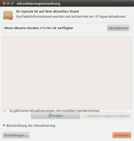
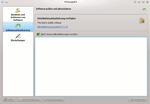
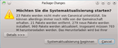

Upgrade auf Oneiric
Archivierte Anleitung
Dieser Artikel wurde archiviert, da er - oder Teile daraus - nur noch unter einer älteren Ubuntu-Version nutzbar ist. Diese Anleitung wird vom Wiki-Team weder auf Richtigkeit überprüft noch anderweitig gepflegt. Zusätzlich wurde der Artikel für weitere Änderungen gesperrt.
Zum Verständnis dieses Artikels sind folgende Seiten hilfreich:
Dieser Artikel beschreibt, wie man sein Ubuntu-System von Ubuntu 11.04 auf Ubuntu 11.10 aktualisiert. Diese Version bietet im Vergleich zum Vorgänger jede Menge Aktualisierungen. Ubuntu 11.10 ist aber - ebenso wie Ubuntu 11.04 - keine LTS-Version, sondern eine „normale“ Version, d.h. es gibt Updates und Sicherheitsupdates für 18 Monate, sowohl für die Desktop als auch die Server-Variante. Eine Zusammenfassung der Neuerungen kann man im Artikel Oneiric Ocelot finden.
Grundsätzliches¶
Es gibt zwei Möglichkeiten das Upgrade vorzunehmen:
Auf "normalen" Desktop-Systemen kann das Upgrade über das gewohnte Programm zur Systemaktualisierung gestartet werden.
Auf Systemen ohne grafische Oberfläche lässt sich ein Upgrade in wenigen Schritten auf der Konsole vornehmen.
Wenn ein System sehr stark von der Standardinstallation abweicht, sind Probleme beim Upgrade möglich. Hinweise dazu finden sich unter Upgrade. Besonders Anwender von NVidia- und ATI-Grafiktreibern sollten sich anhand dieser Seite vergewissern, dass ihre Treiber korrekt installiert sind.
Vorbereitung¶
Auf Regressionen prüfen¶
Manche Dinge könnten in der neuen Version nicht mehr oder zumindest schlechter funktionieren als in Ubuntu 11.04. Eine Liste der bekannten Probleme findet sich in den Release Notes (Veröffentlichungshinweise). Im diesem Zusammenhang ist insbesondere der Wechsel des Standard-Displaymanagers von GDM auf LightDM bei Ubuntu zu beachten, der zu Problemen führen kann.
Backup¶
Vor einem Upgrade sollte eine Datensicherung vorgenommen werden, falls etwas schief laufen sollte. Dazu eignet sich
ein Partitionsimage mit partimage, eine Wiederherstellung des exakten Zustandes vor dem Upgrade ist damit besonders einfach
laufende Sicherungen der Daten und Konfigurationen mit sbackup, wenn dies ohnehin verwendet wird. Im Problemfall hat man dann die Möglichkeit, nach der Neuinstallation von Ubuntu 11.10 Daten aus dem Backup wiederherzustellen. Konfigurationen sollten selektiv zurückgespielt werden, da mit dem neuen Release wesentliche Änderungen in den Konfigurationsdateien möglich sind.
Hinweis:
Ubuntu 11.10 verwendet Déjà Dup als neues Standard-Sicherungsprogramm.
Software überprüfen¶
Das Upgradeprogramm kümmert sich selbständig um die Entfernung von Software, die aus inoffiziellen Quellen stammt und die beim Upgrade Probleme bereiten könnte. Es weiß aber nichts von Software, die ganz ohne die Paketverwaltung installiert wurde. Darüber hinaus kann es passieren, das einige Programme nicht mehr in den offiziellen Paketquellen enthalten sind.
Wer Programme ohne die Paketverwaltung oder Checkinstall installiert hat, sollte diese vorher entfernen. Wer nicht weiß, worum es gerade geht, ist nicht betroffen.
Wer Treiber nachinstalliert hat, sollte sich bewusst sein, dass diese in bestimmten Fällen nach dem Upgrade nicht mehr funktionieren. Das betrifft insbesondere auch fehlerhaft installierte Grafiktreiber. Mehr dazu auf der allgemeinen Seite zu Upgrade.
Optional: Oneiric-CD oder -DVD einbinden¶
Wer die neuen Pakete nicht herunterladen will, kann die Alternate-CD oder die DVD von Ubuntu 11.10 verwenden. Nach dem Einlegen der CD erfolgt eine Abfrage, ob die CD eingebunden und der Paketmanager gestartet werden soll. Man wählt hier den Start des Paketmanagers, schließt diesen aber sogleich wieder. Dann ist man bereit für das folgende Upgrade.
Falls nach dem Einlegen der CD nichts geschieht, kann man sie auch manuell zu den Paketquellen hinzufügen [2] oder im Terminal [3] den folgenden Befehl ausführen:
sudo sh /cdrom/cdromupgrade
Upgrade mit Ubuntu (GNOME oder Xfce)¶
Ein Upgrade auf Ubuntu 11.10 lässt sich wie folgt durchführen. Zuerst prüft man, ob in den Software-Paketquellen unter dem Punkt
"System -> Synaptic-Paketverwaltung -> Einstellungen -> Paketquellen -> Aktualisierungen'"" der Punkt "Freigabe-Aktualisierung" auf ""'normale Freigaben" gesetzt wird, was in der Regel schon der Fall sein sollte.
Nun startet man den Update-Manager über
"System -> Systemverwaltung -> Aktualisierungsverwaltung"
Es kann vorkommen, dass die neuere Version nicht angezeigt wird, dann die Aktualisierungsverwaltung aus dem Terminal [3] mit folgendem Befehl starten:
sudo update-manager -c
 Ein Klick auf "Aktualisieren" startet das Upgrade. Zunächst werden die "Release Notes" (in Englisch) angezeigt, die Hinweise auf wichtige Änderungen enthalten. Weiter geht es mit "System aktualisieren".
Das System wird nun untersucht. Manche Pakete sind mit der neuen Ubuntu-Version nicht mehr kompatibel (das betrifft Pakete, die aus fremden Quellen installiert wurden und Pakete, die durch andere ersetzt wurden oder inzwischen überflüssig sind). Diese Änderungen kann man sich detailliert auflisten lassen.
Nach Schließen aller geöffneten Anwendungen geht es weiter mit "Systemaktualisierung beginnen".
Nun folgt das eigentliche Upgrade. Dieser Vorgang darf nicht mehr unterbrochen werden.
Manche Programme werden von Ubuntu 11.10 nicht mehr benötigt. Sie sind in Ubuntu teilweise noch vorhanden, werden aber nicht mehr offiziell unterstützt. Solche Pakete befinden sich dann in der Sektion Universe. Wenn diese Sektion nicht aktiv ist bzw. man diese deaktiviert hat, werden die Pakete jetzt zum Entfernen vorgeschlagen. Da Ubuntu 11.10 ohne diese Pakete voll funktionsfähig ist, kann man unbesorgt auf "Weiter" und dann auf "Remove" klicken.
Nach Beendigung dieses Schrittes muss das System noch neu gestartet werden. Das eigentliche Upgrade ist damit abgeschlossen.
Falls nun einige Programme fehlen, die unter der alten Ubuntu-Version manuell installiert wurden, müssen diese neu installiert werden. Dabei sollte man immer schauen, ob die Pakete inzwischen auch in das offizielle Ubuntu eingeflossen sind.
Upgrade mit Kubuntu (KDE)¶
Das Upgrade von Kubuntu wird ausschließlich über die Softwareverwaltung durchgeführt. Zunächst sollte man das System auf den aktuellen Stand bringen. Dazu über "Aktualisierungen holen" die Paketquellen aktualisieren und über "Vollständige Aktualisierung" und danach "Änderungen anwenden" die Aktualisierung durchführen.
 Nun sollte die Einstellung unter "Einstellungen -> Softwarequellen bearbeiten -> Aktualisierung" auf "normal Release" geändert werden. Nach der Aktualisierung der Paketquellen findet sich nun im Bereich "Softwareaktualisierung" der neue Punkt "Distributionsaktualisierung verfügbar", mit entsprechendem Link auf "Aktualisierung zu Oneiric 11.10".
Nach der Eingabe des Passwortes werden nun die Release Informationen angezeigt. Nach einem Klick auf "Upgrade" wird das Upgrade-Tool heruntergeladen.  Dieses aktualisiert voll automatisch die Paketquellen und deaktiviert Fremdquellen, welche man nach dem Upgrade manuell wieder aktivieren muss. Es wird analysiert welche Pakete aktualisiert, entfernt oder zusätzlich installiert werden. Bevor diese Änderungen durchgeführt werden, muss man in einem Dialog, in dem die Änderungen aufgeführt sind, auf "Systemaktualisierung beginnen" klicken.
Nun werden die einzelnen Pakete heruntergeladen und installiert. Zum Abschluss des Upgrades fordert das Programm dazu auf den Computer neu zu starten.
Aktualisierung über die Konsole¶
Von Debian ist man vielleicht gewohnt, die sources.list so zu ändern, dass die nächste Debian-Version genutzt wird, um danach ein apt-get dist-upgrade durchzuführen. Dies sollte man unter Ubuntu nicht machen. Warum? Ubuntu arbeitet mit dem Update-Manager und diesen sollte man auch beim Upgrade eines Server benutzen.
Per Update-Manager¶
Hinweis:
Im Laufe des Upgrades ist es wahrscheinlich, dass die Netzwerkverbindung zumindest kurzzeitig unterbrochen wird. Führt man daher ein Upgrade auf einem Server durch, zu dem man nur via SSH Zugang hat, so wird man die Kontrolle über das Update verlieren, da die SSH Sitzung unterbrochen wird. Führt man also ein Upgrade auf einem entfernten Rechner durch, so sollte man das Upgrade innerhalb von Screen starten. So besteht die Möglichkeit, die Verbindung wieder aufzunehmen und so wieder das Upgrade zu steuern.
Vor dem Upgrade auf eine neue Version muss man sicherstellen, dass das System auf dem neusten Stand ist:
sudo apt-get update # aktualisiert die Paketquellen sudo apt-get dist-upgrade # aktualisieren der Pakete
Danach installiert [1] man das Programm:
update-manager-core
Nun muss die Datei /etc/update-manager/release-upgrades geprüft werden. In dieser Datei wird definiert, ob der Update-Manager nur LTS-Versionen von Ubuntu beachten soll oder alle Versionen. Ubuntu 11.10 ist, genau wie der Vorgänger, eine normale Version (also keine LTS-Version), daher muss die Datei wie folgt aussehen:
[DEFAULT] # default prompting behavior, valid options: # never - never prompt for a new distribution version # normal - prompt if a new version of the distribution is available # lts - prompt only if a LTS version of the distribution is available Prompt=normal
Ggf. muss der Eintrag hinter Prompt mit einem Editor mit Root-Rechten [4] auf normal gesetzt werden. Danach das Upgrade über
sudo do-release-upgrade
ausgeführt. Ab jetzt muss man nur noch den Anweisungen auf dem Bildschirm folgen. Vorsicht ist angesagt, wenn Meldungen kommen, die die Konfigurationen der einzelnen Systeme ändern. Man sollte jede Konfiguration prüfen und entweder die neue Version akzeptieren oder die eigene Version der Konfigurationsdatei behalten. Man informiert sich am besten vorher, welche Änderungen an den Serverpaketen bei dem Distributions-Upgrade durchgeführt wurden.
Nach dem Neustart¶
Startet man Ubuntu 11.10 zum ersten Mal, so kann es sein, dass das System nach der Anmeldung anzeigt, dass eingeschränkte ("restricted") Module verwendet werden und bietet an, diese auf Wunsch zu deaktivieren. Weitere Information hierzu erhält man im Artikel restricted-manager.
Links¶
Release Notes - Informationen zu 11.10 Oneiric Ocelot

Upgrading to Ubuntu 11.10 - Offizielle Informationen zum Upgrade auf 11.10 Oneiric Ocelot
Upgrading to Kubuntu 11.10 - Community Informationen zum Upgrade von Kubuntu auf 11.10 Oneiric Ocelot
- Erstellt mit Inyoka
-
 2004 – 2017 ubuntuusers.de • Einige Rechte vorbehalten
2004 – 2017 ubuntuusers.de • Einige Rechte vorbehalten
Lizenz • Kontakt • Datenschutz • Impressum • Serverstatus -
Serverhousing gespendet von